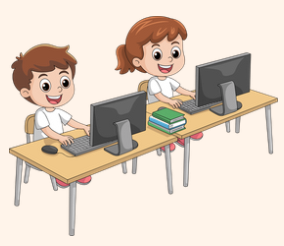
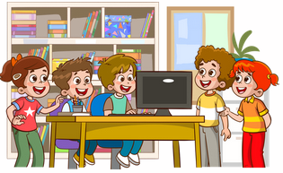

🎵 Actividad 1. Descubrimos artistas andaluces
Escucharemos diferentes canciones y conoceremos a varios artistas andaluces como Paco de Lucía, Lola Flores o Camarón de la Isla.
Agrupamiento: Gran grupo
Herramienta: Vídeos y pizarra digital
Tiempo: 1 sesión
🔍 Actividad 2. Investigamos a nuestro artista
Cada grupo buscará información sobre el artista asignado: biografía, obras más importantes y curiosidades.
Agrupamiento: Grupos cooperativos
Herramienta: Padlet, Symbaloo o Internet supervisada
Tiempo: 1 sesión
💻 Actividad 3. Creamos nuestra presentación digital
El alumnado elaborará una presentación en Canva con imágenes, texto y elementos visuales sobre el artista investigado.
Agrupamiento: Grupos cooperativos
Herramienta: Canva
Tiempo: 2 sesiones
🎤 Actividad 4. Preparamos la exposición
Cada grupo ensayará la explicación de su presentación y preparará una pequeña interpretación musical, corporal o rítmica.
Agrupamiento: Grupos cooperativos
Herramienta: Canva y materiales musicales del aula
Tiempo: 1 sesión
🎉 Actividad 5. Festival Digital de Artistas Andaluces
Los grupos presentarán sus trabajos al resto de la clase mostrando su presentación digital y realizando su actuación musical.
Agrupamiento: Gran grupo
Herramienta: Canva y proyector digital
Tiempo: 1 sesión
🌟 Producto final
Cada grupo habrá creado una presentación digital sobre un artista andaluz y la expondrá durante el Festival Digital de Artistas Andaluces, demostrando lo aprendido sobre la música, la cultura andaluza y el uso responsable de las tecnologías digitales.
